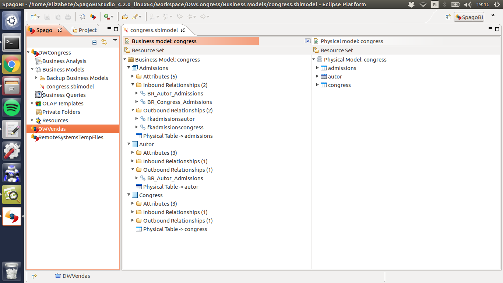

Aplicação OLAP - Star Schema e DW de Congresso
A criação do data warehouse demanda inicialmente a criação de um modelo de dados dimensionais da aplicação chamado star schema. Tal modelo é composto por uma tabela central ou tabela fato e várias dimensões. A tabela fato armazena o fato ocorrido, os atributos mensuráveis e as chaves para as dimensões, já as dimensões são as tabelas contém as características do fato que ocorreu. A figura 1 representa o modelo star schema para a aplicação de submissão artigos.

No modelo apresentado na figura as dimensões são as tabelas congress, autor e year, um fato é representado pela tabela admissions que contém accepted e refused, os atributos mensuráveis do modelo que representam respectivamente os artigos aceitos e os recusados por um determinado congresso.
O indicador escolhido para ser mensurado foi o número de artigos publicados por autor, lembrando que para um artigo ser publicado ele precisa ser aceito. Para chegar até esse indicador algumas questão foram colocadas:
- Qual fato ocorreu? Um artigo x foi aprovado
- Quando este fato ocorreu? No ano y
- Quem? Pelo autor z
Estas respostas foram a base para criação do cubo através da ferramenta SpagoBI , o projeto em questão utilizou a versão 5.2 do servidor e 4.2 da ide SpagoBI Studio, pois a versão mais recente da IDE apresentou problemas no ambiente linux. A figura 2 mostra a criação do modelo do cubo através da ferramenta citada.

Após a criação o cubo foi enviado ao server onde é possível gerar relatórios em forma de gráficos ou tabelas cruzando as informações das tabelas de dimensão e fato. A figura 3 apresenta uma tabela com uma relação entre autor e quantidade artigos aceitos e recusados.

Na primeira e segunda coluna estão os valores relativos a artigos aceitos e recusados, respectivamente, e na terceira o nome do autor destes artigos.
A próxima etapa do projeto e realizar o processo de ETL para migrar as informações do base relacional para a base do DW.